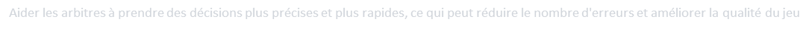
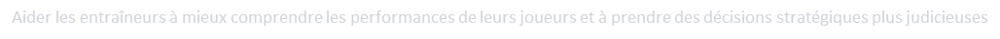
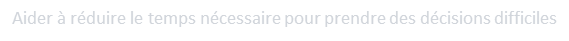

Dévoile le ballon connecté qui sera utilisé pendant les matchs pour la détéction des hors-jeux
IA & Detection des hors-jeux
Ballons connéctés
Le football figure parmi les sports les plus répandus à travers le globe. Pour maintenir l'intégrité du jeu, il est essentiel de garantir que les règles sont respectées et que les décisions des arbitres sont justes et précises. C’est pourquoi l'utilisation de la technologie, en particulier de l'IA, est de plus en plus courante dans le sport, notamment pour la détection des hors-jeu avec l’aide de ballons connectés.
La détection des hors-jeux est un défi pour les arbitres et les juges de ligne, car il est difficile de déterminer avec précision si un joueur est en position de hors-jeu. C'est là que l'IA intervient.
Les ballons connectés en eux-mêmes ne détectent pas les hors-jeu. Cependant, ils sont utilisés conjointement avec des systèmes d'IA pour aider à détecter les hors-jeu. Les ballons connectés sont équipés de capteurs qui mesurent différents paramètres tels que la vitesse, la position, l'accélération et la rotation du ballon.
Dévoile le Ballon connecté
« Al Rihla », le ballon officiel de la coupe du monde 2022 au Qatar lors des 64 matchs ..
Au cœur de ce ballon , on retrouve un capteur de mouvement , alimenté par une batterie rechargeable qui envoie 500 fois par seconde des données à la salle de visionnage pour détecter le plus exactement possible le moment où le joueur touche le ballon pour faire sa passe
Cette nouvelle technologie utilise 12 caméras placées sous le toit du stade afin de suivre le ballon ainsi que chaque joueur – jusqu’à 29 points de données contrôlés 50 fois par seconde – dans le but de déterminer leur position exacte sur le terrain. Les 29 points de données contrôlés comprennent les extrémités et membres pertinents pour l’analyse des situations de hors-jeu.
Al Rihla, le ballon officiel adidas de Qatar 2022™apportera une aide précieuse pour la détection des situations de hors-jeu délicates puisqu’il contient un capteur d’unité de mesure inertielle (IMU). Ce capteur, placé au centre du ballon, envoie des données à la salle de visionnage 500 fois par seconde, permettant une détection très précise du moment exact où le ballon est joué.
En combinant les données provenant du ballon et des joueurs, la nouvelle technologie transmet automatiquement une alerte de hors-jeu aux arbitres vidéo. Avant d’en informer l’arbitre sur le terrain, les arbitres vidéo valident la décision proposée en vérifiant manuellement le moment de la passe qui aura été déterminé automatiquement ainsi que la ligne de hors-jeu qui aura été elle aussi générée automatiquement.
Ce processus ne prend que quelques secondes, ce qui permet de prendre des décisions plus rapides et plus précises sur les situations de hors-jeu. Une fois la décision confirmée par l’arbitre sur le terrain, les points de données utilisés pour prendre la décision sont transposés dans une animation 3D qui montrera systématiquement le meilleur angle possible, sera ensuite diffusée sur les écrans géants du stade et mise à la disposition des partenaires de diffusion de la FIFA.
Les Arbitres
Aider les arbitres à prendre des décisions plus précises et plus rapides, ce qui peut réduire le nombre d'erreurs et améliorer la qualité du jeu

Les entraineurs
Aider les entraîneurs à mieux comprendre les performances de leurs joueurs et à prendre des décisions stratégiques plus judicieuses

Réduire le temps
Aider à réduire le temps nécessaire pour prendre des décisions difficiles

Les avantages de l'IA pour la
détection des hors-jeux
Les limites de l'IA pour la
détection des hors-jeux dans le football
la détection des hors-jeux repose en grande partie sur la perception de la profondeur, ce qui signifie qu'il est nécessaire de comprendre la distance entre les joueurs et la ligne de but. Cela peut être difficile pour l'IA, en particulier dans les situations où les joueurs se croisent sur le terrain.
la détection des hors-jeux doit être effectuée en temps réel, ce qui signifie que l'IA doit être capable de traiter rapidement de grandes quantités de données vidéo pour détecter les hors-jeux potentiels. Cela peut être un défi pour les systèmes d'IA qui peuvent être limités par des ressources matérielles ou de traitement.
Algorithmes utilisés
Réseaux de neurones : Les réseaux de neurones peuvent être utilisés pour entraîner des modèles de détection de hors-jeu en utilisant des données de mouvement et de position des joueurs et du ballon collectées
Arbres de décision : Les arbres de décision peuvent être utilisés pour créer des règles de détection de hors-jeu basées sur les positions des joueurs et du ballon.(Un arbre de décision est un outil d'aide à la décision représentant un ensemble de choix sous la forme graphique d'un arbre)
Algorithmes de classification : Les algorithmes de classification, tels que les SVM (Support Vector Machines), peuvent être utilisés pour classer les positions des joueurs et du ballon comme étant en hors-jeu ou non.
Algorithmes de clustering : Les algorithmes de clustering peuvent être utilisés pour regrouper les positions des joueurs et du ballon en groupes et détecter les hors-jeux en utilisant les positions relatives des joueurs et du ballon.